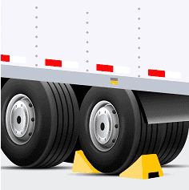
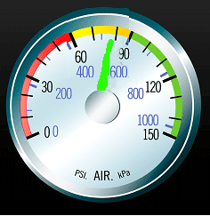
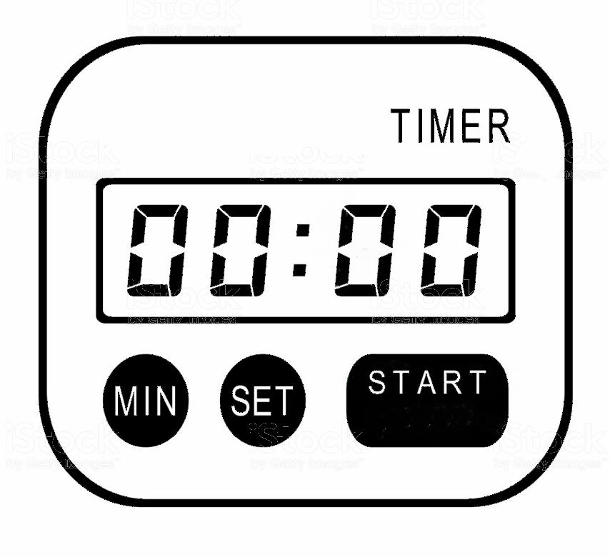
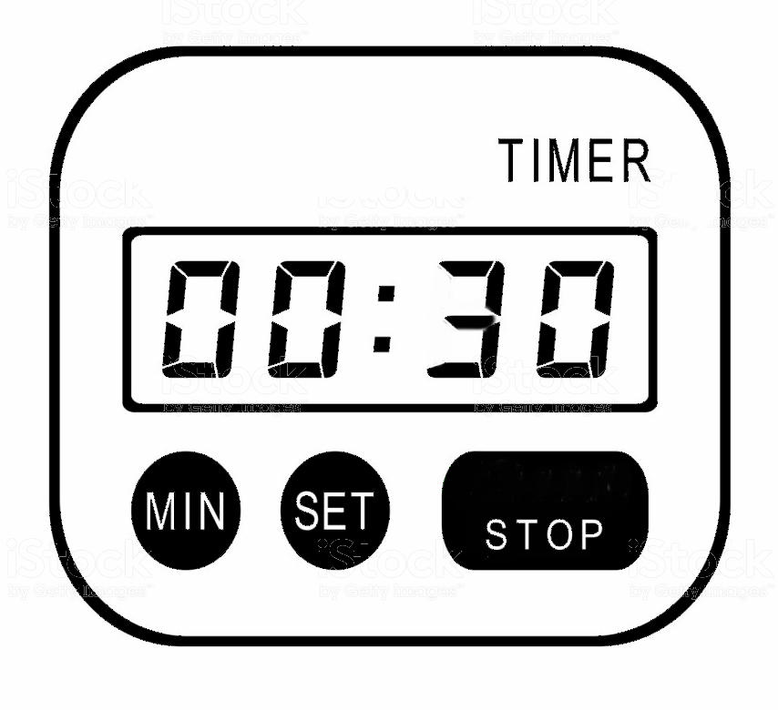
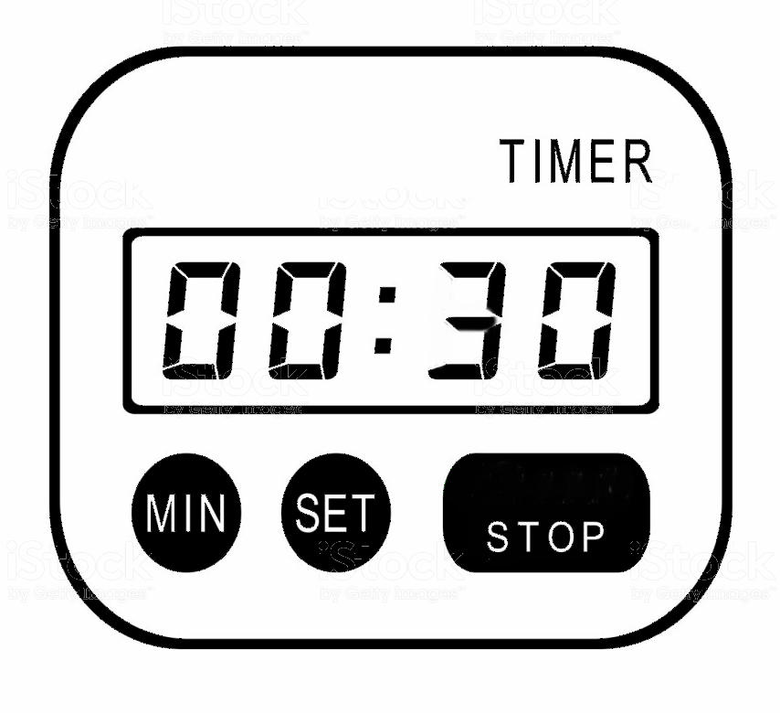

Pressure Build-up - Testing Procedure
- 1. Enter cab
"The wheels are chocked, both parking brakes are applied, My truck & trailer secure"
 - 2. Start the engine
"My current pressure is ____psi "

- 3. Reduce the Air Pressure to 80psi (Pump brake pedal to reduce pressure)
"I will reduce/lower my air pressure to 80psi"
 - 4. At 85psi
" At 85psi, I will start my timer"
 - 4. At 100psi
"At 100psi, I will stop my timer"
 

- 5. Indicate the time to build 15psi
"My truck takes ___ seconds to build 15psi, Which is better than 2 minutes" - 6. Read Minor & Major Defects
To see video of the Pressure Build-Up Inspection:Press Here!.